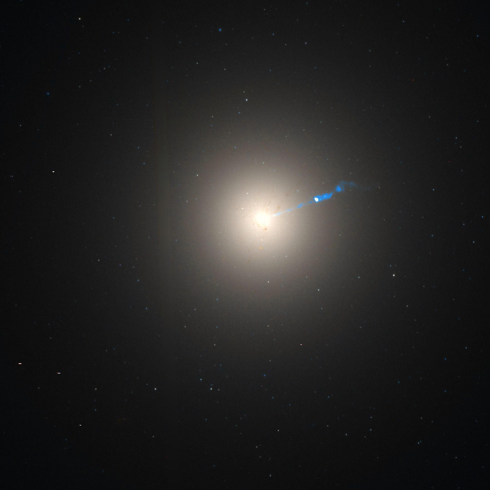

Las galaxias son vastas agrupaciones de estrellas, gas, polvo y materia oscura que
se mantienen unidas por la
gravedad. Son los componentes básicos del universo a gran escala y vienen en una variedad de formas y
tamaños.
Aquí tienes información general sobre las galaxias:
Hay varios tipos principales de galaxias:
Hay varios tipos principales de galaxias:

Galaxias elípticas: Tienen una forma redondeada o elíptica y carecen de
estructura de brazos espirales. Están compuestas principalmente por estrellas viejas y tienen menos
formación estelar activa.

Galaxias espirales: Tienen brazos espirales bien definidos y a menudo una
región central llamada bulbo.
Contienen estrellas jóvenes y viejas, así como regiones de formación estelar activa.

Galaxias irregulares: Carecen de una forma distintiva y pueden tener una
mezcla de estrellas jóvenes y viejas.
Suelen presentar una alta tasa de formación estelar y estructuras caóticas.

Galaxias lenticulares: Tienen una forma similar a las elípticas pero con
una pequeña estructura de disco. Contienen tanto estrellas jóvenes como viejas.

Vía Láctea: Nuestra propia galaxia, la Vía Láctea, es una galaxia espiral.
Contiene alrededor de 100-400 mil millones de estrellas y es el hogar de nuestro sistema solar.
Consiste en una gigantesca agrupación de estrellas, planetas y nubes de gas con forma de espiral
barrada y un diámetro medio de alrededor de 200.000 años luz

Galaxias en el universo observable: Se estima que hay alrededor de 100-200
mil millones de galaxias en el universo observable.
Estas galaxias varían en tamaño desde enanas hasta gigantes.
Agrupaciones y cúmulos de galaxias: Las galaxias a menudo se agrupan en estructuras más grandes
llamadas agrupaciones y cúmulos de galaxias
Estas son las estructuras más grandes en el universo conocido.
Materia oscura: Aunque no podemos verla directamente, la materia
oscura es una forma de materia que se cree que compone una gran parte de la masa del universo. Juega un
papel
crucial en la formación y evolución de las galaxias.
Expansión del universo: Las galaxias en el universo están en constante movimiento, alejándose unas de otras
debido a la expansión del universo. Esto se demostró por primera vez mediante la observación del corrimiento
al
rojo en el espectro de la luz de galaxias distantes.
Agujeros negros supermasivos: Muchas galaxias, incluida la nuestra, albergan agujeros negros supermasivos en
sus
centros. Estos agujeros negros tienen masas enormes y pueden influir en la evolución y dinámica de sus
galaxias
huéspedes.
Evolución galáctica: Las galaxias evolucionan a lo largo del tiempo a medida que
las estrellas nacen y mueren, y
las fusiones galácticas pueden dar lugar a nuevas formas y estructuras. La colisión futura de la Vía Láctea
con
la galaxia de Andrómeda es un ejemplo de este proceso.
Exploración y estudio: Los astrónomos estudian las galaxias utilizando
telescopios en una variedad de longitudes
de onda, incluyendo luz visible, infrarrojo, radio y rayos X. Esto proporciona información sobre la
composición,
dinámica, formación estelar y otros aspectos de las galaxias.
Historia cósmica: El estudio de las galaxias nos permite comprender mejor la
historia del universo, desde sus
inicios en el Big Bang hasta la formación y evolución de estructuras cósmicas a lo largo del tiempo.